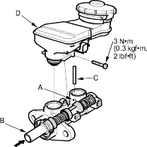
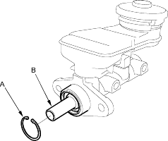

- On vehicle's with ABS; align the slot in the primary piston with the stop pin hole (A) by pushing the secondary piston (B) in and install the stop pin (C).

- Install the reservoir (D) to the master cylinder.
- Install the new circlip (A) while pushing in the secondary piston (B). Be careful not to scratched damage on the piston surface with the circlip the circlip edges.
